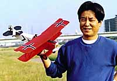
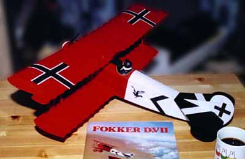
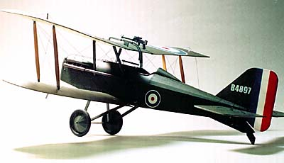
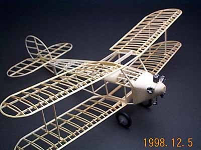

|  |
Treasures from Jiro SugimotoAny fan of Bill Hannan's delightful publications will be familiar with the work of master modeler Jiro Sugimoto. Here are a few examples of his art.
|
|
Fokker D-VII
Jiro built this Fokker D-VII from the Herr Engineering kit. Sporting a 24" wing span, it's total weight is 125 grams. This despite a G-MOT GM-300 Co2 engine and small 2 channel RC system. He writes, "We do not have large field near here, and we have to fly these big models in small Shonai Park. We sometime put our model hanging on the tree or fly away outside of the Park. So I use this RC system and I never lose my model at the Park." |
 |
|
SE-5a
This SE-5a is not a display model! It is a peanut scale ship that flies very well at a quite reasonable 10.5 grams. |  |
|
Blackburn Bluebird
Dear all, I met Enrique Maltz who came from Israel with his orchestra few weeks ago at Osaka city. I got his broken Blackburn Bluebird Peanut model that he built some years ago. He built this model from George Nunez's plan in M.I.A.M.A "Hanger pilot" newsletter. I changed dihedral of the wing, repaired fuselage, put the foam engine that I got from Jake Lason and rebuilt tail wings. At last, I just finished under construction this pretty bird. |
 |
Jiro Sugimoto visited Northern California in September of 2002.
View more treasures he brought with him.
return to
Copyright 1998-2002, Thayer Syme. All rights reserved